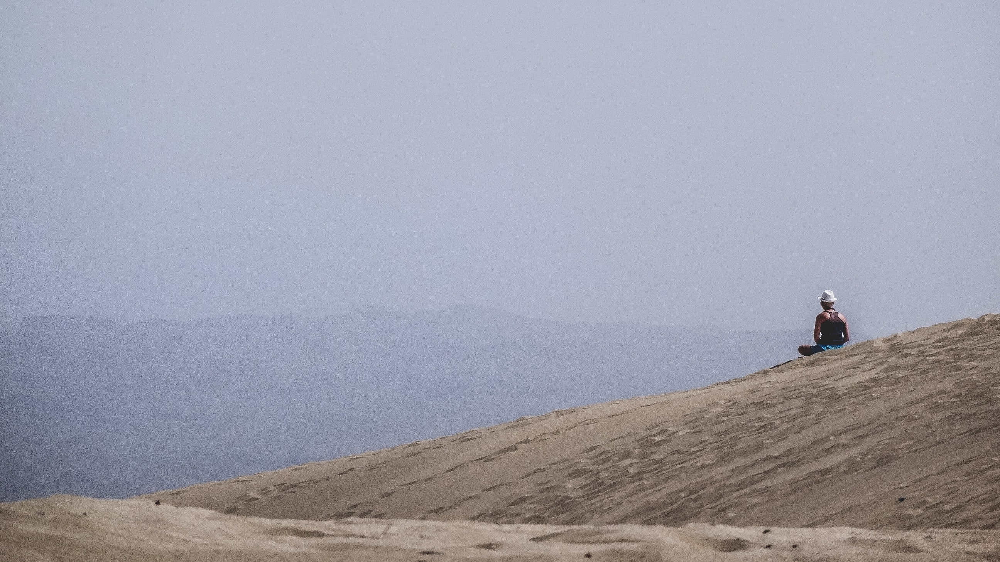
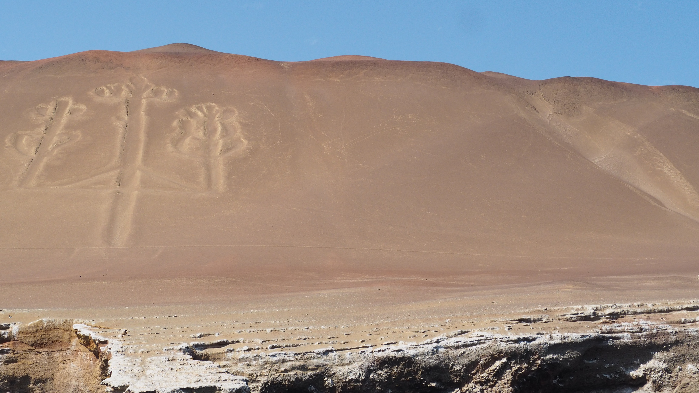

La Cultura Nazca fue descubierta por el arqueólogo alemán Federico Max Uhle en 1901. Igualmente Maria Reich es reconocida por sus profundas investigaciones de las reconocidas Líneas de Nazca.
La Cultura Nazca ocupaba un extenso territorio al sur del Perú. Desde la costa del Océano Pacífico extendiéndose hasta el este del actual departamento de Ayacucho. Ubicada en el valle del actual departamento de Ica. Previamente conocida como Kiwicha. Dado que está ubicado en un valle en medio del desierto, las características geográficas generan un clima mayormente seco. Pero a pesar de las condiciones, la agricultura prosperó dado que suministraban los recursos de los ríos y manantiales cercanos con precaución.
La ubicación de Nazca proporcionaba ventajas pero también retos, los pobladores de la cultura Nazca aprovecharon la costa mediante la pesca y marisquería. Además de ganadería y artesanía. A pesar de las circunstancias climáticas no ideales para la agricultura, esta fue la actividad económica principal de la Cultura Nazca. Esto es debido a su gran innovación de la tecnología agraria,mediante la construcción de complejos canales de irrigación superficiales y acueductos subterráneos. Además de andenes en las faldas de los cerros debido a la falta de campos agrícolas.
Los acueductos subterráneos son característicos de la Cultura Nazca, dado que son la única cultura del mundo en construir acueducto en el periodo intermedio temprano. Los acueductos eran vias subterraneas con ventilación por la cuales circulaba el agua en distintas direcciones para ser distribuidas a los cultivos. A parte de los acueductos usaron diversas técnicas de riego avanzadas como pozos, canales y galerías subterráneas.
Las Líneas de Nazca son geoglifos de gran dimensión dibujados en el desierto. Son el resultado de una compleja red de líneas y diseños de animales, humanos, plantas y figuras geométricas. Estas figuras están ubicadas en las pampas de Nazca y tienen una extensión de entre 50 y 300 metros. Pueden ser observadas desde gran altura como el mirador construido o desde aviones. En 1994 fueron declaradas Patrimonio de la Humanidad por la UNESCO.
Al finalizar la Segunda Guerra Mundial, las líneas fueron profundamente estudiadas por Maria Reich, una arqueóloga alemana- peruana. A pesar de mucha investigación no se ha logrado establecer un claro significado, pero segun los arqueologos Maria Reich y Paul Kosok, estas guardaban relación con el calendario astronómico. EStableciendo relación con la astronomía y la agricultura, dado que los pobladores de la Cultura Nazca debían tener en cuent las estaciones del año para identificar en qué periodos deben realizar ciertas tareas agrícolas. Las Líneas de Nazca aparentan haber sido lugares de ceremonia donde se realizaban ofrendas y sacrificios, ya que en gran parte de los geoglifos se han encontrado altares y restos de vasijas.
La teoría más aceptada, es que las líneas fueron trazadas por los pobladores mediante el uso de diversos instrumentos como el tupu, el teodolito, el cordel y el nivel de agua. Se han mantenido a lo largo de los años debido a las propiedades del suelo, ya que es rico en yeso. Además las piedras sobre la superficie protegen de las corrientes del viento, ya que bordean las líneas de las figuras.
El arte de la Cultura Nazca es conocida por su cerámica. Caracterizada por ser policroma, ya que utilizaban hasta 8 colores en una pieza, pero no utilizaron los colores verde ni azul. También es reconocida por sus diversas formas, pero la más predominante era la forma ovalada, con un aspecto acalabazado o lenticular. Mayormente tienen dos picos cilíndricos divergentes unidos por una asa puente. Pero también tienen una gran variedad de botellas, ollas, platos y vasos, mayormente representando figuras de animales, plantas, frutas y hombres.